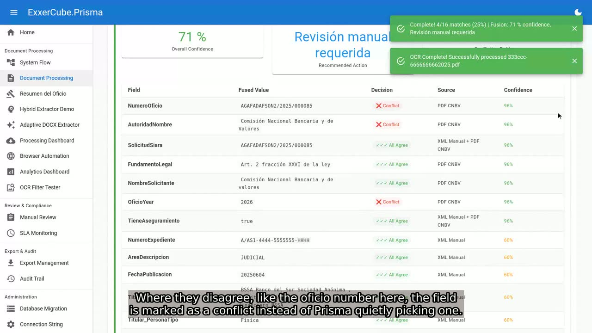

The Challenge
Mexican banks receive a constant stream of legally binding requests from courts and authorities through the regulator's portal, each due within a few business days. Every request arrives as up to three files (a scanned PDF, a Word letter and an XML record) that should agree and often don't. Teams of lawyers and analysts were downloading, reading and retyping each case by hand, where one misread digit or missed deadline becomes a regulatory finding.
My Role
- Defined the product and its architecture end to end: a hexagonal .NET 10 core that knows nothing about the OCR engine, database or portal behind it.
- Designed the security model the institution required: downloading, reading and deciding run as three separate processes, each with its own identity, passing signed, single-document handoffs and never storing portal credentials.
- Designed the three-source reconciliation that turns imperfect OCR into answers a compliance team can defend, with conflicts sent to people rather than resolved silently.
- Set the engineering bar: architecture rules enforced by tests, errors as values instead of exceptions, containerized integration tests and a full-pipeline gate against a portal simulator.
- Directed AI-agent-assisted implementation at scale (1,000+ commits), with every agent result verified against builds, tests and git history.
Prisma — Regulatory Request Processing
- Downloads the official requests ("oficios") that Mexican authorities send to financial institutions through the CNBV's SIARA portal — account freezes, unfreezes, information requests and transfers — each due in a few business days.
- Reads each request's PDF, Word and XML versions, running scanned pages through image-quality analysis and OCR.
- Reconciles the three sources field by field, flags conflicts for a reviewer instead of guessing, and counts the deadline in Mexican business days.
- Exports responses in the regulator's formats (SIRO XML, Excel, PDF), with an append-only audit trail of every system and reviewer action.
- Validated end-to-end against a purpose-built simulator of the regulator's portal.
IndViSi — Statement Verification
- Automates the quality check banks are required to perform on customer account statements before issuance — arithmetic accuracy, customer data, formatting and required legal disclosures.
- Applies a configurable, bank-specific rules checklist to each statement and produces a findings report.
- Flags exceptions for human review rather than making a final accept/reject decision on its own, keeping a qualified analyst in the loop for regulatory judgment calls.
- Built around a statement-verification engine — Verificación de Estado de Cuenta in Spanish.
Source-Available Release
Prisma is published as ExxerCube Prisma, free to read, run and evaluate under the PolyForm Noncommercial license, with commercial licensing for production use. The release ships with the SIARA portal simulator, a synthetic document corpus, more than 3,800 automated test methods and an end-to-end gate that runs the three ingestion processes from download to export. Its project website walks through the system in six short demo videos, in English and Spanish. IndViSi remains private.

Watch the six demo videos
Also on YouTube: English playlist · lista en español.
Architecture
Both products share a common hexagonal-architecture .NET foundation and document-processing pipeline, with IndViSi built as an additional module on top of the platform originally developed for regulatory-request processing. Ingestion, processing and validation are separated into independent stages, using a functional error-handling model (Result<T>) in place of exceptions for business logic, with full observability instrumentation throughout.
Technology
- .NET 10 / C#, hexagonal / clean architecture
- Blazor (MudBlazor) web interface
- Tesseract OCR with image-quality analysis; Python document-AI interop (CSnakes)
- Event-driven processing (Rx.NET)
- xUnit v3, Testcontainers, Playwright; Serilog, OpenTelemetry
- Docker images per service; Playwright-driven SIARA portal ingestion